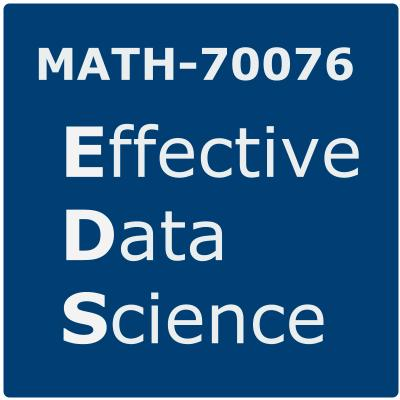

Effective Data Science
About this Course

Model building and evaluation are necessary but not sufficient skills for the effective practice of data science. In this module you will develop the technical and personal skills that are required to work successfully as a data scientist within an organisation.
During this module you will critically explore how to:
- effectively scope and manage a data science project;
- work openly and reproducibly;
- efficiently acquire, manipulate, and present data;
- interpret and explain your work for a variety of stakeholders;
- ensure that your work can be put into production;
- assess the ethical implications of your work as a data scientist.
This interdisciplinary course will draw from fields including statistics, computing, management science and data ethics. Each topic will be investigated through a selection of lecture videos, conference presentations and academic papers, supported by hands-on lab exercises and readings on industry best-practices as published by recognised professional bodies.
Schedule
These notes are intended for students on the course MATH70076: Data Science in the academic year 2023/24.
As the course is scheduled to take place over five weeks, the suggested schedule is:
- 1st week: effective data science workflows;
- 2nd week: acquiring and sharing data;
- 3rd week: exploratory data analysis and visualisation;
- 4th week: preparing for production;
- 5th week: ethics and context of data science.
An alternative pdf version of these notes may be downloaded here. Please be aware that this pdf version is secondary to this course webpage and will be updated less frequently.
Learning outcomes
On successful completion of this module students should be able to:
- Independently scope and manage a data science project;
- Source data from the internet through web scraping and APIs;
- Clean, explore and visualise data, justifying and documenting the decisions made;
- Evaluate the need for (and implement) approaches that are explainable, reproducible and scalable;
- Appraise the ethical implications of a data science projects, particularly the risks of compromising privacy or fairness and the potential to cause harm.
Allocation of Study Hours
Lectures: 10 Hours (2 hours per week)
Group Teaching: 5 Hours (1 hour per week)
Lab / Practical: 10 hours (2 hours per week)
Independent Study: 100 hours (11 hours per week + 45 hours coursework)
Drop-In Sessions: Each week there will be a 2-hour optional drop-in session to address any questions about the course or material. This is where you can get support from the course lecturer or GTA on the topics covered each week, either individually or in small groups.
These will be held on Fridays 15:00-17:00 in Huxley 711C.
Office Hours: Additionally, there will be an office hour each week. This is a weekly opportunity for 1-1 discussion with the course lecturer to address any individual questions, concerns or problems that you might have. These meetings can be in person or on Teams and can be academic (relating to course content or progress) or pastoral (relating to student well-being) in nature. To book a 1-1 meeting please use the link on the course blackboard page.
Office hours will be held on Mondays 15:00-16:00 in Huxley 6M20. (Week 3 alteration, 14:00-15:00)
Assessment Structure
The course will be assessed entirely by coursework, reflecting the practical and pragmatic nature of the course material.
Coursework 1 (30%): To be completed during the final week of the course, the week commencing 2024-02-12.
Coursework 2 (70%): To be released during the third week of the course and submitted following the examination period in Summer term (2024-01-29 until 2024-05-15 at 13:00).
Acknowledgements
These notes were created by Dr Zak Varty. They were inspired by a previous lecture series by Dr Purvasha Chakravarti at Imperial College London and draw from many resource that were made available by the R community, which are attributed throughout.